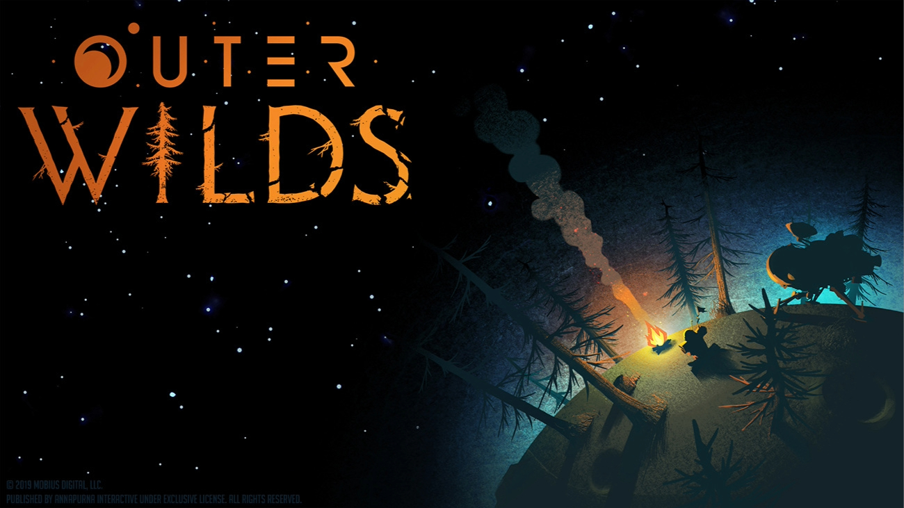
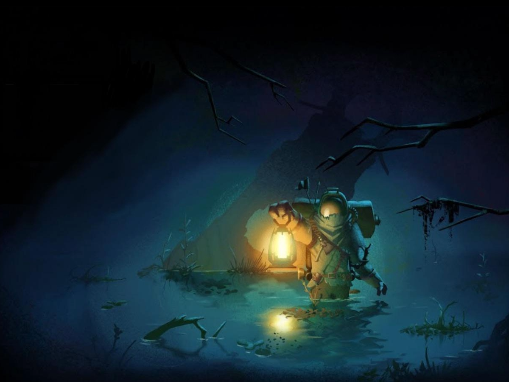

Outer Wilds is a special game that can only be played once
While it sounds horrible to never be able to replay a game, Outer Wilds is an exception. The game is so intricately put together to help the player learn about the world around them then put all of their knowledge they've attained into figuring out how to make it into the final area and finish the game. The dlc is my favorite part of the game because of how they implement the dlc's story into the main game without it seeming completely out of place. The ost for the game wraps it all in a neat bow and gives the game even more life than it already has, especially with the travelers.
*I know this explanation sucks, but I'm trying my hardest not to spoil; It's insane how easy you can.*


